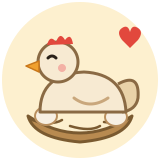

雞媽媽的家
雞媽媽住在哪裡？
看蛋殼上的字母就知道！
有的雞媽媽住在小小的籠子裡，有的可以在大房子裡走來走去，有的還可以到院子曬太陽。

蛋殼上的字母，就是雞媽媽的家
很多雞蛋的蛋殼上會印字。第二行最後面圈起來的字母，告訴你這顆蛋的雞媽媽住在哪裡。點下面的家看看！
圖是畫給小朋友看的樣子，真的蛋殼上印的字會不一樣。
想一想
哪一種蛋比較好呢？
 營養
差不多
營養
差不多
不管住在哪裡，蛋都一樣營養。最重要的是雞媽媽吃什麼。

雞媽媽舒不舒服 差很多家越大，雞媽媽越能走路、拍翅膀、洗沙澡，過得比較開心。
 乾不乾淨
看怎麼保存
乾不乾淨
看怎麼保存
有沒有洗乾淨、有沒有放冰箱，比住在哪裡更重要。
考考你
字母小測驗
給爸爸媽媽看（比較詳細的說明）
蛋殼噴印
2026 年 7 月 1 日起，洗選業者生產的洗選蛋都要逐顆噴印兩行字並登錄溯源資訊，違者最高罰新台幣 3 萬元。第一行是溯源編碼，可查到牧場和洗選廠；第二行是包裝日期，加上一個代表飼養方式的字母。傳統市場的散裝蛋通常沒有逐顆噴印。（資料來源：中央社 2026 年 9 月 13 日報導）
| 代碼 | 飼養方式 | 母雞過得怎樣 | 價格 |
|---|---|---|---|
| C | 一般籠飼 | 關在小籠子裡，幾乎不能走動或展開翅膀 | 最便宜 |
| E | 豐富化籠飼 | 籠子比較大，裡面有棲架、產蛋箱、磨爪區 | 稍貴 |
| B | 平飼 | 在雞舍地上自由走動，可以抓地、沙浴。台灣的友善標準是每平方公尺不超過 9 隻 | 中等 |
| F | 放牧 | 平飼之外，還可以到戶外曬太陽、吃草和蟲 | 較貴 |
| O | 有機 | 放牧，加上吃有機飼料，並且有藥物使用的限制 | 最貴 |
營養
蛋的營養主要取決於飼料，跟飼養空間關係較小。放牧雞能曬太陽、吃草和蟲，有些研究發現蛋的維生素 D 或 Omega-3 稍高，但差異不大，各牧場也不同。蛋黃顏色深淺主要跟飼料有關，不代表比較營養。
食品安全
籠飼的雞和糞便分開，蛋殼較乾淨，也較少接觸野鳥。放牧的雞會接觸土壤和野鳥，要注意禽流感、寄生蟲和土壤污染；台灣曾發生放牧雞場的蛋戴奧辛超標，原因與雞場土壤環境有關。對安全影響更大的是：有沒有洗選、有沒有冷藏、有沒有過期。
怎麼選
- 先顧安全：不管哪種飼養方式，都選有噴印的洗選蛋，在冷藏櫃拿，看清楚日期，買回家馬上冷藏。
- 預算有限：一般洗選蛋（C）就有基本的安全把關。
- 想對母雞好一點又不想太貴：平飼（B）是很好的折衷，全聯的「動物福利蛋」專區就有。
- 很在意動物福利或有機飼料：選放牧（F）或有機（O），可參考哪裡買雞蛋。
「動物福利蛋」不等於「有機蛋」。動福蛋看的是母雞的飼養環境；有機蛋還要吃有機飼料、通過有機驗證。動物福利蛋的認證標準請以各認證單位公告為準。
繼續探險